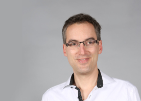

SEA 2022
20th Symposium on Experimental Algorithms
Date: 25th - 27th July
Invited Speaker
Tobias Achterberg
Short Bio: Tobias Achterberg studied mathematics and computer science at the Technical University of Berlin and the Zuse Institute Berlin. He finished his PhD in mathematics under supervision of Prof. Martin Grötschel in 2007. Dr. Achterberg is the author of SCIP, currently the best academic mixed integer programming solver. In addition to numerous publications in scientific journals he has also received several awards for his dissertation and for SCIP, such as the Beale-Orchard-Hays Prize. From 2006, Dr. Achterberg worked for ILOG / IBM as developer of CPLEX in versions 11 to 12.6. Since 2014 he has been involved as a Senior Developer in the development of the Gurobi Optimizer and is currently the VP of R&D at Gurobi.
Short Bio: TBA Cynthia A. Phillips
Short Bio: Paul Spirakis is a Chair Professor in the Department of Computer Science of the University of Liverpool and also a Professor of the University
Of Patras. Paul’s main research areas are distributed computing , randomness in algorithms and algorithmic game theory.
Paul received his PhD from Harvard University in 1982 and prior to that his MSc also form Harvard University in 1979 and
his BSE in Electrical Engineering from the National Technical University of Athens in 1978.
Paul held a postdoctoral position at Harvard , then served as a faculty member at NYU and then became an Associate Professor at the University
of Patras in 1987 and a Full Professor in 1990 also in the University of Patras.
In 2013 he also joined the faculty of the CS Department of the University of Liverpool. Paul has also been a distinguished visiting
researcher of Max Planck Informatik. He has directed the Computer Technology Institute (CTI) of Greece from 1996 to 2016.
Paul is the co-author of three scientific books of international circulation and of 7 scientific books in Greek.
Paul has been the President of the European Association of Theoretical Computer Science (EATCS) from 2016 to 2020. He has chaired the
ERC Panel for Informatics twice. He has also been a Member of the European Research Council of ACM and is a Member of the EUACM
Policy Body. Paul has been a National Rep. of Research for Greece in the EU and has also served in the ISTAG policy body of the EU.
Paul is a Member of Academia Europaea and a Fellow of EATCS. He is the Editor-in-Chief of the Theoretical Computer Science journal (TCS) for
Algorithms and Complexity. He has received several awards and has supervised approximately 35 PhD students (and numerous MSc students).
Paul has chaired several program committees (including those of PODC, ICALP , SPAA , WINE , SAGT and IPDPS) and has been the Conference Chair of STOC.
He has served in over 50 program committees. Paul Spirakis